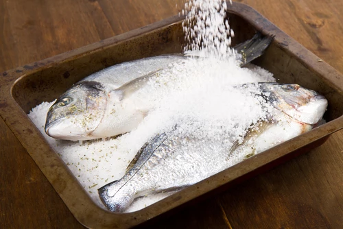
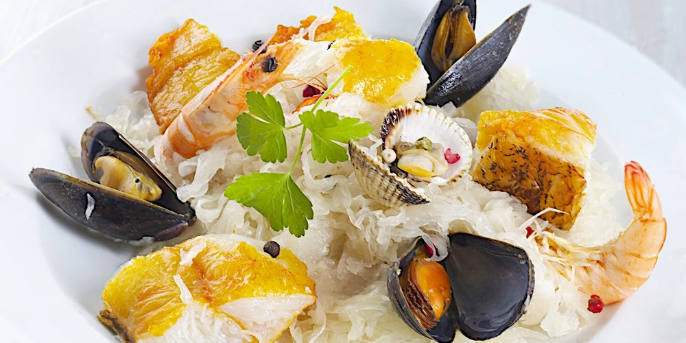
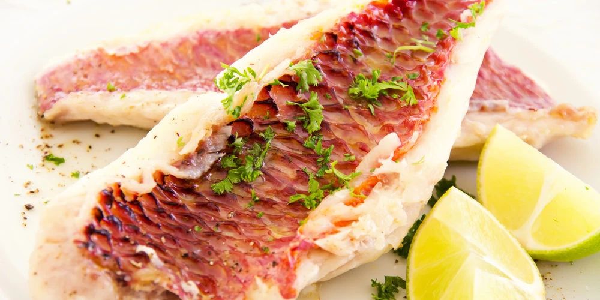

Le sushi est un plat traditionnel
japonais, composé d'un riz vinaigré
appelé shari combiné avec un autre
ingrédient appelé neta qui est
habituellement du poisson cru ou des
fruits de mer.

Dorade en croûte de sel
C'est cuit, quand le sel est dur
et quand il commence à foncer
(25 à 30 min).

Choucroute de la mer express
C'est une recette que cuisinait
ma grand-mère lors des fêtes de
famille et elle y rajoutait des
poissons frais type rouget

Filets de rougets au basilic
Pané, au four, en papillote, en
tajine, en brochettes, en
choucroute, en cassolette…
A PROPOS DE NOUS
Venez découvrir notre restaurant Hitaki 14 Av. Zerktouni, Safi. Installé depuis 2019, après
transformation d’une ancienne restaurant existante depuis 2018. Notre restaurant dispose de 2 salles et
pour les beaux jours d'une grande terrasse ombragée.
NOTRE MEILLEURES PLATS
Sushi
Le sushi est un plat traditionnel japonais, composé d'un riz vinaigré appelé shari combiné avec
un autre ingrédient appelé neta qui est habituellement du poisson cru ou des fruits de mer.
Filets de rougets au basilic
Pané, au four, en papillote, en tajine, en brochettes, en choucroute, en cassolette…
Choucroute de la mer express
C'est une recette que cuisinait ma grand-mère lors des fêtes de famille et elle y rajoutait des poissons frais type rouget
Dorade en croûtede sel
C'est cuit, quand le sel est dur et quand il commence à foncer (25 à 30 min).